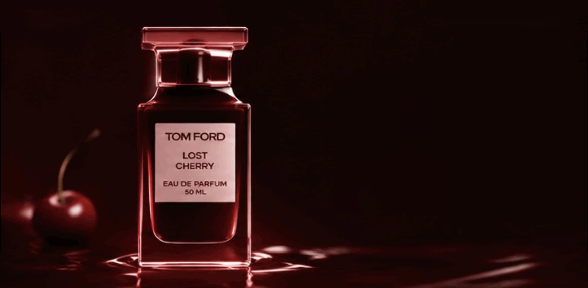
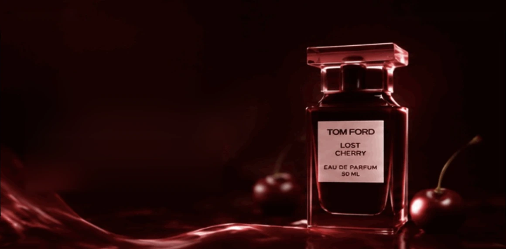

LOST CHERRY
THE ORIGIN
A bold interpretation of the forbidden.
Lost Cherry was created by Tom Ford in 2018 as a contrast between innocent sweetness and sensual depth.
THE
ESSENCE
- CHERRY
- Juicy and provocative.
- ALMOND
- A smooth, seductive contrast.
- TONKA
- Warm, addictive depth.

-
The luscious sweetness of ripe cherry.
-
A striking, sensual contrast of bitter almond and depth.
-
A warm, lingering trail that stays with you.
